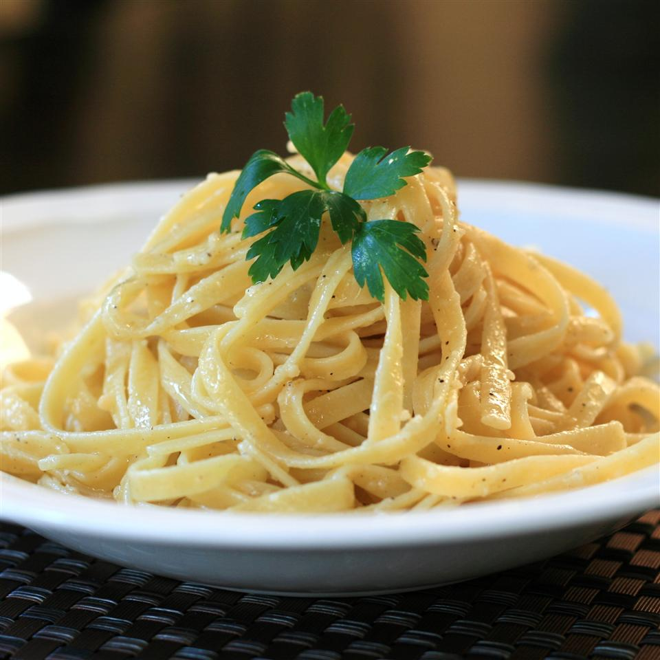

Buttered Noodles

Description
This is a classic! A simple and very tasty recipe for buttered noodles.
Ingridients
- 1 (16 ounce) package fettuccine noodles
- 6 tablespoons butter
- 1/3 cup grate Parmesan cheese
- salt and ground black pepper to taste
Directions
- Fill a large pot with lightly salted water and bring to a rolling boil.
Stir in fettuccine, bring back to a boil, and cook pasta over medium heat
until tender yet firm to the bite, 8 to 10 minutes. Drain and return pasta
to pot.
- Mix butter, Parmesan cheese, salt, and pepper into pasta until evenly combined.